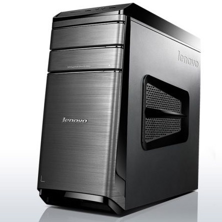
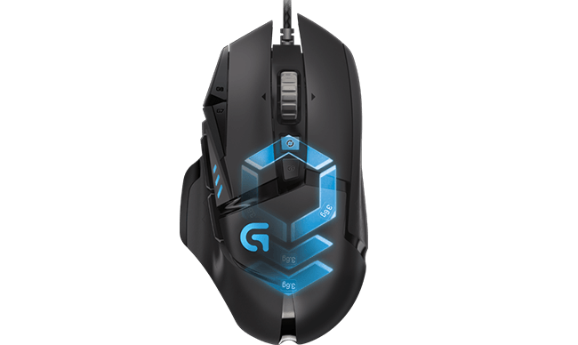
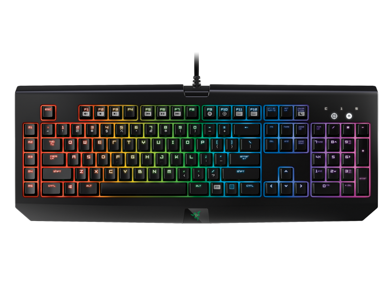

When I considered purchasing a desktop I knew that I wanted something I was able to game on meaning the specs had to be decent. My original purchase was a Lenovo desktop with an Intel Core i5-6400 processor, 8GB RAM, 1TB hard with an 8GB solid state drive, and a NVIDIA GeForce GT 730 GPU. Since the game I mostly play is League of Legends these specs were more than enough to run the game at an efficient level. However, I quickly found myself wanting to play more demanding games and also wanted to be able to stream, meaning that I had to upgrade some of my older parts. So far the upgrades I have made include: my ram to 16GB, my Power Supply to a 750watt, and my GPU to the NVIDIA GeForce 970. These alone give me more than enough power to run just about any game a  want to at high settings while also streaming. The next upgrades I plan to make are to my motherboard, CPU and a new case.
Other than the specs of the computer there are other peripheral devices that help to give me a better gaming experience over all. One the most important devices is the mouse; in which I have chosen to use the Logitech G502 Proteus Spectrum RGB. This mouse comes with 11 programmable buttons, allowing you to program multiple different macros that can give you an edge. On top of that it also comes with 5 3.6gram weights that you can choose to use which can make the mouse feel more comfortable to  move around overall. Another very important peripheral device that I use is my mechanical keyboard. The mechanical keyboard I have chosen to use is the Razer Blackwidow Chroma. This keyboard was the very first mechanical gaming keyboard and helps to give a major advantage in gaming by utilizing mechanical switches in its keys. These switches give the keyboard a boost in accuracy and much better response time than your average keyboard which is very important when trying to game at a competitive level. I also have the Corsair VOID 7.1 wireless headset so that I can communicate with my friends when we are playing a game together. This allows for us to communicate in a fashion that is much quicker than having to type everything out  on a keyboard.
While I enjoy playing video games, I also like to stream them when I am able to do so. The website I stream on is called Twtich.tv which is the platform that a majority of the professional streamers use. The capture software I use to set up my stream is called Open Broadcast Software, which is free open source software that is used for recording and live streaming. The design of this software is very simple and made it very easy for me to set up a nice layout and have my stream going in just a couple of hours. Other than the software used, there are also other peripheral devices that I use while streaming to in order to optimize the stream for myself and my viewers. One of the devices I use is the Blue Yeti Microphone which allows for me to talk and interact with my viewers. This helps to keep my audience involved and makes the stream much more entertaining than it would be if they were just watching me play some game. Another device that I like to use is the Logitech C920 HD Webcam. This allows for my viewers to actually see me and the reactions I have while I am live. Allowing people to see me and who I am can help to make them feel more comfortable when interacting with me through the stream. While I have not gotten too far into streaming, I am hoping that I will be able to build up a decent sized fan base and have a great time with it in the near future.
Other useful links...


Brescia

Owensboro

Telephone